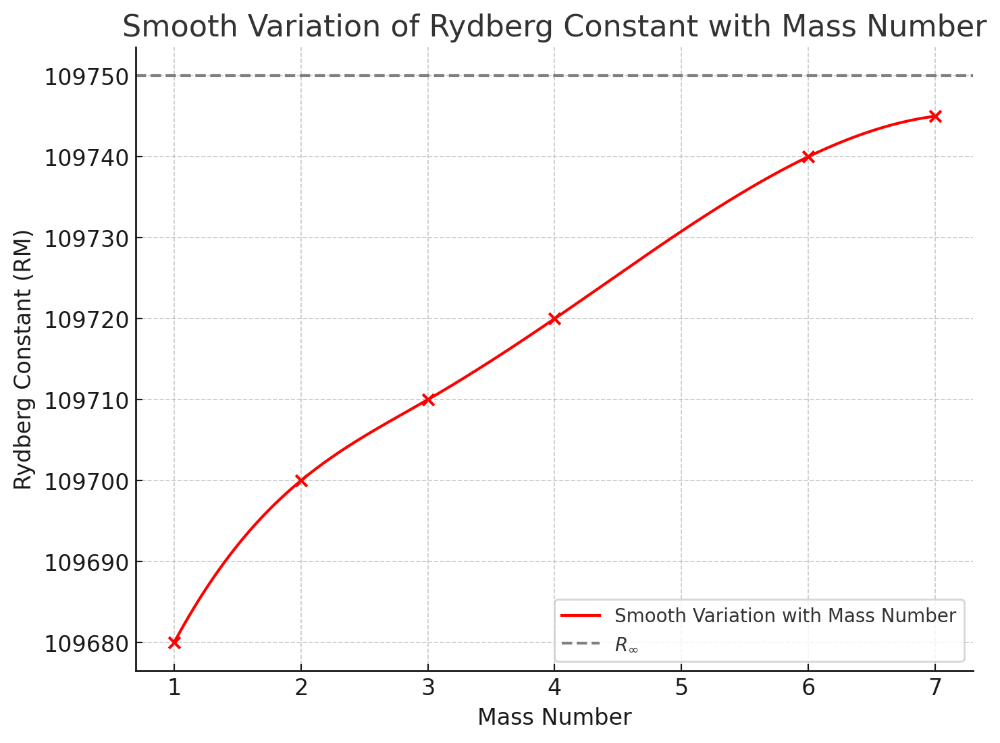

When we talk about atomic spectra and the beautiful series of lines that emerge from elements like hydrogen, one fundamental constant comes into play: the Rydberg constant. But what exactly is it, and how does it relate to the electron's mass and the center of mass of atoms? Let's dive deep!
The Rydberg constant, denoted by R∞
R∞, is a physical constant associated with the wavelengths of light emitted or absorbed by atoms. It plays a crucial role in describing the spectral lines of hydrogen and hydrogen-like atoms.
There are two formulas for the Rydberg constant according to whether the system is infinite mass system or finite mass system.
\[ R_\infty = \frac{m_e e^4}{8 \varepsilon_0^2 h^3 c} \]
R∞ exact value is 1.0973731568539 × 107
In real atoms, especially hydrogen, the electron doesn't orbit a stationary nucleus. Instead, both the electron and the nucleus orbit around their common center of mass.
To account for this motion, physicists use the reduced mass μ:
The actual Rydberg constant for hydrogen is then adjusted:
\[ R = R_\infty \cdot \frac{m_N}{m_N + m_e} \] \[ R = (1.0973731568539 \times 10^7) \cdot \frac{1.67262192369 \times 10^{-27}}{(1.67262192369 \times 10^{-27}) + (9.1093837015 \times 10^{-31})} \] \[ = (1.0973731568539 \times 10^7) \cdot \frac{1.67262192369 \times 10^{-27}}{1.67353286206 \times 10^{-27}} \] \[ = (1.0973731568539 \times 10^7) \cdot 0.9994565 \] \[ = 1.0967758 \times 10^7 \text{ m}^{-1} \]
\[ R = R_\infty \cdot \frac{m_N}{m_N + m_e} \] \[ = R_\infty \cdot \frac{(m_p + m_n)}{(m_p + m_n) + m_e} \] \[ = (1.0973731568539 \times 10^7) \cdot \frac{6.6465 \times 10^{-27}}{(6.6465 \times 10^{-27}) + (9.1093837015 \times 10^{-31})} \] \[ = 1.09722200 \times 10^7 \text{ m}^{-1} \]
Like this we can find the Rydberg constant for any atom.
This image shows the variation of Rydberg constant with respect to the mass of the nucleus/mass number of the atom.
